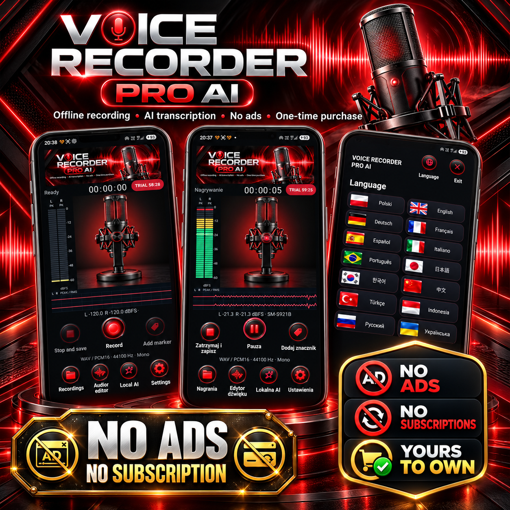
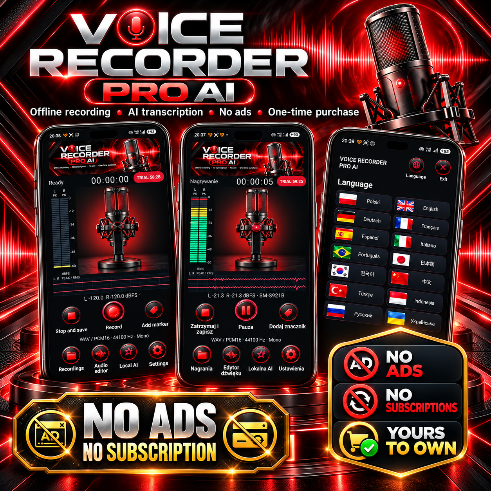
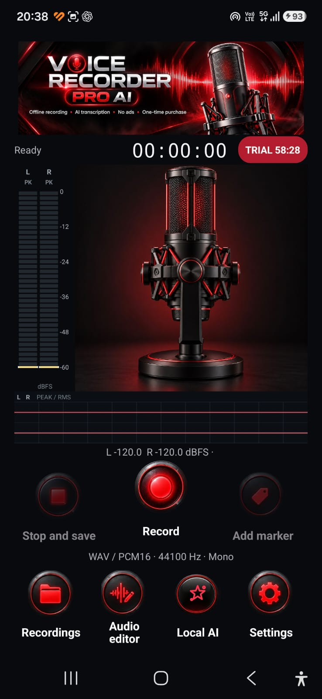
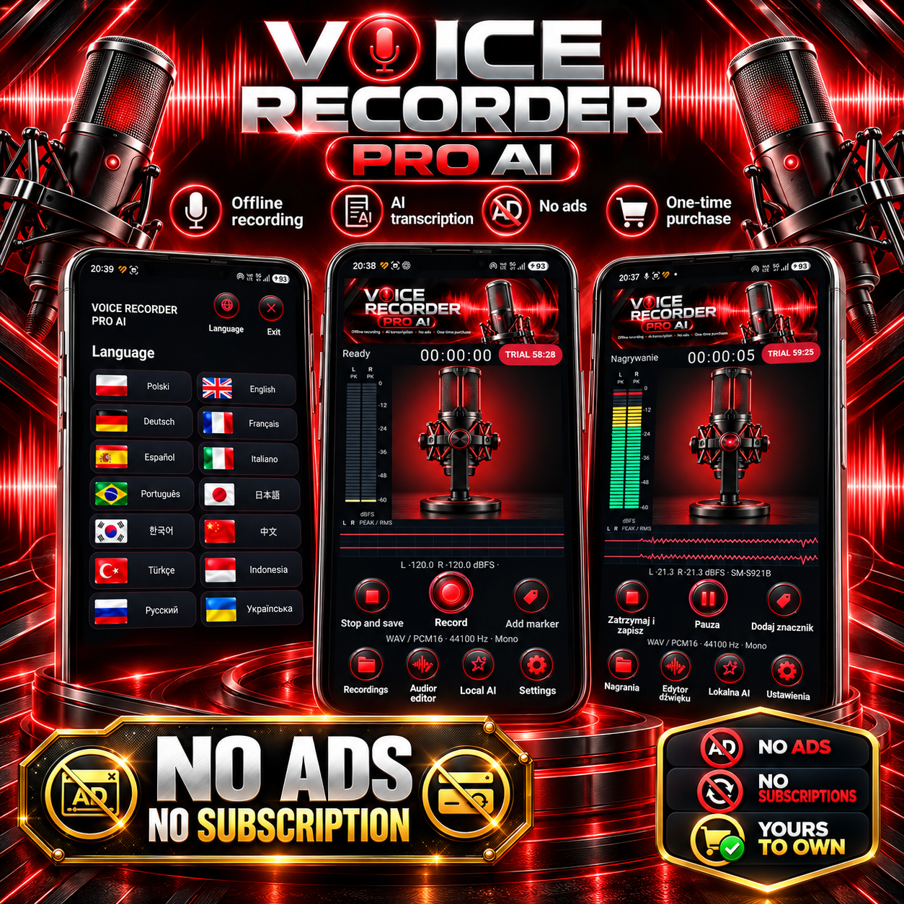
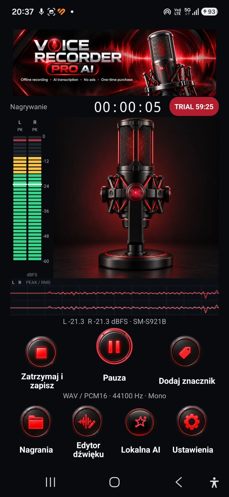

VOICE RECORDER PRO AI – Android ve Wear OS için ses kaydedici
VOICE RECORDER PRO AI; Android telefon ses kaydını, Wear OS saatte bağımsız kayıt yapmayı, ses düzenlemeyi ve cihaz içi konuşma tanımayı bir araya getirir. Sesli notları, toplantıları, röportajları, dersleri, fikirleri ve uzun kayıtları yakalayın. Dosyaları yerel olarak saklayın, düzenleyin ve dışa aktarın.
Dosya adı, klasör, etiket veya kayıtlı döküm metniyle arama yapın.
Klasörler, etiketler ve favorilerle kayıtları düzenleyin.
Kayıtları çöp kutusuna taşıyın ve kalıcı silmeden önce geri yükleyin.
İleri-geri sarma, işaretlere gitme ve ayarlanabilir oynatma hızını kullanın.
Uyumlu PCM16 WAV dosyalarını içe aktarın, diğer uygulamalarla paylaşın ve ZIP yedeklerini elle oluşturup geri yükleyin.
Ses düzenleme ve dışa aktarma
Seçilen ses bölümünü saklayın veya belirli aralığı kayıttan çıkarın.
Uyumlu kayıtları birleştirin ve ses düzeyini normalleştirin.
Cihazın desteklediği kodlayıcılara göre WAV, kayıpsız FLAC, M4A/AAC veya OPUS olarak dışa aktarın.
Konuşmayı yazıya çevirme ve yerel yapay zekâ
Uyumlu Android sürümlerinde cihaz içi konuşma tanıma ile kayıtlı sesleri yazıya dönüştürün.
İsteğe bağlı Vosk modeli içe aktararak özel ve çevrimdışı döküm oluşturun.
Dökümleri düzenleyin ve düzeltmeleri kalıcı olarak kaydedin.
Metinden kısa özetler ve açıkça belirtilmiş görevler çıkarın.
Dökümleri TXT dosyası olarak dışa aktarın ve paylaşın.
Gizlilik, deneme ve tek seferlik satın alma
Siz dışa aktarma, paylaşma, yedekleme veya aktarma yapmadıkça kayıtlar uygulamanın özel yerel depolama alanında kalır.
Reklam ve abonelik yoktur; 60 dakikalık deneme sunulur.
Deneme sonunda tam sürümü tek seferlik satın alma ile açabilirsiniz.
Gürültü işleme, konuşma tanıma ve dışa aktarma seçenekleri cihaz ile Android desteğine bağlıdır.
Telefon ve saat için tek bir ses kaydedici: PCM16 WAV, zaman işaretleri, ses düzenleme, aktarım ve desteklenen cihazlarda yerel konuşmadan metne dönüştürme. VOICE RECORDER PRO AI'ı Google Play'de keşfedin.
Uygulama ekran görüntüleri

VOICE RECORDER PRO AI · 1VOICE RECORDER PRO AI · 2

VOICE RECORDER PRO AI · 3

VOICE RECORDER PRO AI · 4

VOICE RECORDER PRO AI · 5

VOICE RECORDER PRO AI · 6VOICE RECORDER PRO AI · 7